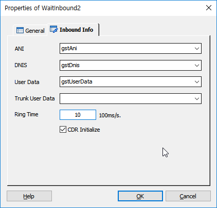

ICON
PROPERTIES
 Inbound Info
Inbound Info

ANI Info : 교환기로 부터 발신자 번호를 받을 수 있도록 변수를 지정 합니다.
DNI Info : 착신측 서비스 번호를 받을 수 있도록 변수를 지정 합니다.
User Data : 사용자 데이터를 받을 수 있도록 변수를 지정 합니다.
Trunk User Data : 사용자 데이터를 받을 수 있도록 변수를 지정 합니다.
Ring Time : SLEE에서 전화를 받기전 Delay 시간을 지정 합니다.(100ms 단위, 1초는 10 입니다.)
CDR Initialize Check Box : 체크 되어 있으면 호 착신 직후에 Init CDR 을 적재하며 체크 해제 시에는 호 종료 시점에 Init CDR 을 적재 합니다.(Default : TRUE), 이 값을 체크 해제 하고 CDRCtrl Item에서 Init CDR 적재 여부를 설정 할 수 있습니다.
♣ 교환기에서 지원할 경우 값들을 입력 받을 수 있으며, 시나리오 간 전환이 있을 경우는 ChangeService Item에서 각 항목별로 값을 넘겨 받을 수 있습니다.
♣ CTI 서버를 이용하는 경우는 CB(CTI Bridge)를 통하여 처리 되어야 합니다.
RESULT
· 처리 결과 세션 변수
session.sys.id : SLEE system ID + channel ID 를 조합한 값으로 점유된 호 중에서만 유일
session.sys.systemid : SLEE system ID
session.sys.channel : LI(driver Logical Index) 값으로, SLEE 채널 번호로 사용
session.sys.servicekey : LR(Logical Range) 값으로, 서비스를 선택하기 위한 값으로 사용
session.sys.trunkid : MCE(TE) system ID
session.sys.physicalline : TE physical channel #
session.sys.virtual : 호가 점유된 LI(channel #)가 virtual 회선인지에 대한 값
session.sys.debugservicelr : -1
session.sys.servicechanged : 서비스 전환 여부(콜의 시작 이므로 0)
session.call.callid : TE call ID로, TE에서 콜마다 Unique하게 부여하는 ID(구성 : 프로세스 ID 4자리 + Channel ID 4자리+ 시분초(hhmmss) 6자리 + 랜던 6자리)
session.call.ani : TE 또는 시나리오 전환 시 이전 시나리오로 부터 받은 ANI 값
session.call.dnis : TE 또는 시나리오 전환 시 이전 시나리오로 부터 받은 DNIS 값
session.call.userdata : 시나리오 전환 시 이전 시나리오로 부터 받은 userdata 값
session.call.prevservice : 시나리오 전환 시 이전 시나리오에 대한 service ID
session.call.disconnected : 서비스가 TE disconnect 이벤트를 받았는지 여부(콜의 시작 이므로 0)
session.call.reconn : 복구콜 여부(0:일반콜, 1:복구콜)
RELATED